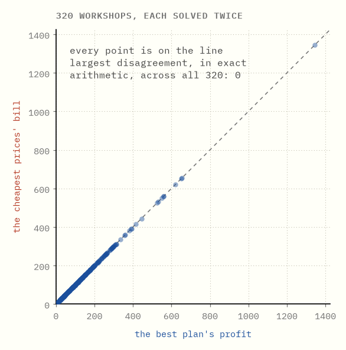

Every plan has a price tag
Linear programming duality, built from a workshop with three shelves.
There is a small trick at the centre of operations research that almost nobody outside the field has heard of, and it is this: every planning problem comes with a second problem attached to it, about prices, and solving either one solves both.
That reads like an accounting curiosity. It is why a solver can report what a resource is worth to you rather than only what to do with it, why large problems can be split up and stitched back together, and what column generation and Benders decomposition are made of. The whole thing is built here from a workshop with three shelves and two products, without an equation.
The numbers below are produced by the code in this folder and asserted by its tests. Exact rationals throughout, so "equal" means equal.
0What this is

Two different questions, asked by two different people, about the same workshop.
The owner asks: what should I build? They push their profit as high as it will go.
The buyer asks: what would I have to pay to buy the place out? They push their bill as low as it will go.
The two pictures have different axes and are not the same shape. One climbs, the other falls, and neither is allowed to look at the other. They stop at the same number. Not close to it; on it.
The rest of this guide is about why that happens, what the second picture is telling you that the first cannot, and where it stops being true.
1The workshop
A workshop builds tables and chairs.
| planks | hours of work | saw time | sells for | |
|---|---|---|---|---|
| a table | 4 | 2 | 3 | $30 |
| a chair | 2 | 3 | 1 | $20 |
| in stock | 44 | 30 | 32 |
That is the whole problem. Three things there is a limited amount of, two things to make out of them, and a question: what is the most money that can come out of this building?

Every point in the shaded region is a plan the workshop could really carry out. The edges are straight because building twice as much uses twice as much. That is the only assumption in the guide, and it is what gives the picture flat sides and corners rather than curves.
To find the best plan, take the set of plans worth some particular amount (a straight line) and push it outwards.

The last plan the line still touches is the best one: 9 tables and 4 chairs, worth $350. It is a corner. That is not luck, and it is why every method in this repository spends its time on corners.
Try it yourself → Change what a table and a chair sell for, and watch the best corner jump from one to the next.
2A good plan cannot prove itself best
You have a plan worth $350. How do you know there is nothing better?
The region is a continuum. 7 tables and 4½ chairs sits in it, and so does everything between that and its neighbours. Enumeration is not slow here; it is not defined.
You could try a great many of them anyway and watch the best one you have found.

The curve flattens. A flat curve looks the same whether you have found the best plan or have merely stopped getting lucky, and nothing in the search distinguishes those, because a plan can only ever say at least this much is possible.
What is needed is a statement of the opposite kind, saying no more than this is possible. No plan will ever say that. It has to come from elsewhere.
3Charging for the ingredients
It comes from the other side of the ledger.
Forget building anything. Put a price on each of the three things in stock: so much per plank, so much per hour of work, so much per hour of saw time. Any prices you like, as long as none of them is negative.
Now those prices imply a price for a table, because a table is 4 planks, 2 hours and 3 hours of saw time. They imply a price for a chair too. And if the prices you chose happen to have this property —
every product is priced at least as high as it sells for
— then something quite strong follows. Whatever the workshop builds, the ingredients it consumes are worth at least what the finished goods sell for. So the total value of everything in the building is at least the most the workshop could ever earn. You have a ceiling.

Watch the left panel first. Raising the plank price alone covers tables long before it covers chairs, and while either bar is short the prices prove nothing whatever. Not a weak ceiling. No ceiling. A price list satisfying one condition is worth as much as no price list.
Then watch what happens once both are covered: there is room to trade a lower plank price for a higher hourly rate, stay legal the whole way, and the ceiling comes down.
Try it yourself → Set the three prices by hand and find out how low you can push the ceiling before one of the products slips under its price.
4Every honest price list is a ceiling
The claim in the last chapter deserves to be seen rather than asserted, because it is the load-bearing step and it is two ideas rather than one.
Take any plan; it does not have to be a good one. Take any price list that covers both products. Line up three numbers.

The plan shown builds 10 tables and 2 chairs, earning $340. The prices shown are $7 a plank, $3 an hour and nothing for saw time. Then:
- $340 ≤ $386, because every product is priced at least what it earns, so the ingredients a plan eats are worth at least what the plan makes.
- $386 ≤ $398, because a plan cannot use more of anything than there is.
So $340 ≤ $398. Notice what the argument never used: that this was a good plan, or that these were cheap prices. It holds for every plan and every covering price list simultaneously. Every honest price list is a ceiling over every possible plan.
That is the whole payoff. Find a plan worth $350 and a price list charging $350, and no plan can beat $350 while you are holding one that reaches it. You are finished, you know you are finished, and you never examined a second plan.
5They always meet
So plans push up from below and price lists press down from above. The question is whether they meet, or whether they stop with a gap between them that nothing can close.

They meet. The best plan earns $350 and the cheapest honest price list charges $350, and the space in between has nothing left in it.
It would be fair to suspect this workshop of being rigged. So here are 320 more workshops, invented at random — different numbers of products, different numbers of shelves, different recipes — each one solved twice from scratch, once for its best plan and once, as a completely separate problem, for its cheapest prices.

Every point is on the diagonal, and because both sides are computed in exact fractions the largest disagreement across all 320 is not "small" — it is zero.
This is the theorem that makes the subject work. It has a name — strong duality — and it is worth being clear about what the picture above is and is not. It is not a proof. It is 320 pieces of evidence and a warning that any proposed explanation had better predict all of them. The proof exists, and chapter 9 shows the shape of it by looking at what happens when the theorem's conditions fail.
Two problems, then. The one about plans is called the primal; the one about prices is called the dual. Each is built from the other by turning it inside out — rows become variables, variables become rows, the objective and the stock levels trade places, and the inequalities reverse. Do it twice and you are back where you started, which is the sense in which neither one is the original.
6Which rules are actually holding you back
Now the dual starts paying for itself.
The best plan is 9 tables and 4 chairs. It uses all 44 planks and all 30 hours, and 31 of the 32 hours of saw time — one hour of saw time is left sitting there.
Now look at the prices: $6.25 a plank, $2.50 an hour, and nothing at all for saw time.

Spare saw time, zero saw price. Planks fully consumed, planks priced. A resource with something left over is worth nothing; a resource that is all used up is worth something. If saw time is not what is stopping you, nobody would pay you for another hour of it.
The same rule runs the other way, for products rather than resources. A product that gets built is priced at exactly what it earns — no more. A product priced above what it earns would be one you are better off not building at all, and in the best plan its quantity is zero.
This pairing has a name, complementary slackness, and in practice it is the first thing anyone looks at, because it answers the question people actually care about: not "what should I do" but "what is in my way".
Try it yourself → Change the stock levels and watch which rules become binding, and which prices switch on and off in response.
7What one more plank is worth
The prices are more than a ranking. They are exact rates.
The plank price is $6.25, meaning one more plank in stock is worth $6.25 of extra profit. To the penny, and you can watch it happen.

Add a plank, the plank line moves out, the best corner slides along the hours line, and the profit goes up by $6.25. Again, and again.
This is what a dual variable is, and why the name shadow price stuck. Planks might cost $3 at the yard. Here the forty-fifth one is worth $6.25, because of what else this workshop happens to be short of. That is the number you want when deciding what to buy, what to negotiate for, and what a bottleneck is costing.
Watch the end of that animation, though. The rate stops.
8The price is only local
Keep adding planks and eventually the saw becomes the problem instead. From that point on, extra planks pile up unused and are worth nothing.

The whole curve is three straight pieces, and the plank price is the slope of the piece you happen to be standing on:
| planks in stock | one more plank is worth | why |
|---|---|---|
| under 20 | $10.00 | so few planks that tables are not worth building at all |
| 20 to 45 ⅐ | $6.25 | where this workshop actually is |
| over 45 ⅐ | $0.00 | the saw is the binding rule now; planks pile up |
The workshop has 44 planks. It is 1 ⅐ planks away from its price collapsing to nothing. A shadow price without the range it holds over is close to useless, and quoting one without the other is the most common way this idea gets misused in practice.
The pieces get flatter, never steeper. Easy uses go first, so more of a resource is never worth more per unit than the last lot was, and the curve can only bend one way.
Try it yourself → Slide the stock of any of the three resources and watch its own price step down.
9When it goes wrong
Two things can go wrong, and the dual has something to say about both.

Profit that runs away. If the rules leave a direction the workshop can go forever, there is no best plan. A ceiling would have to be a number bigger than every plan, and there is no such number — so there are no honest prices at all. The two failures come as a pair: the plan side runs away exactly when the price side has nothing to offer.
A plan that cannot exist. Suppose an order arrives for 12 tables. Forty-four planks make eleven tables, so the order cannot be met. Here is the part worth seeing — the impossibility has a short proof, and the proof is arithmetic rather than an exhausted search:
Take a quarter of the plank rule, and all of the order. Add them together, and they say: half of the chairs, at most −1. A count of chairs cannot be negative. So there is no such plan.
Four lines, checkable by anyone, and it settles the question forever. This is the same idea as a price list, wearing different clothes: a weighted mixture of the rules that adds up to something plainly absurd. It is called a Farkas certificate, and the fact that one always exists when a system is impossible is the fact that strong duality is built on.
There is one more case worth naming so it does not surprise you: at a bend in that curve from chapter 8, the price is genuinely not unique. Standing exactly at 45 ⅐ planks, one more plank is worth nothing and one fewer costs $6.25, and both numbers are legitimate prices. A solver will hand you one of them without mentioning the other. This is called degeneracy, and it is why a sensitivity report should always be read as a range and never as a point.
10Where this leads
Everything above is one small problem solved by hand. The reason duality is worth this much attention is what gets built on it.
- The simplex method decides which product to bring into a plan by asking whether its dual row is violated — the "reduced cost" in any solver's log is exactly the amount by which a product's ingredients cost less than it earns.
- Column generation turns that around. When there are too many possible products to write down, solve with a few, read the prices off the dual, and use those prices to ask whether some product you have not written down yet would be worth adding. The prices are the entire interface between the two halves.
- Dantzig–Wolfe decomposition is what you get when that idea is applied to a problem with repeated structure, and branch and price is what you get when the pieces have to come out whole.
- Benders decomposition cuts the other way: fix the hard decisions, solve what is left, and take the dual of that leftover problem as a new rule to send back. Every Benders cut is a price list from chapter 3, doing the job it was doing there — proving that a proposal cannot be as good as it claims.
Those are the next topics in this repository. They are all this chapter's idea, under load.
What the plain words are really called
Every invented phrase in this guide has a standard name. They are here so that anything you read next is legible.
| this guide says | everyone else says |
|---|---|
| a plan | a feasible solution |
| the best plan | an optimal solution |
| the plans problem | the primal |
| a price list that covers every product | a dual feasible solution |
| the prices problem | the dual |
| a ceiling | an upper bound |
| every honest price list is a ceiling | weak duality |
| the two always meet | strong duality |
| spare resources are worth nothing | complementary slackness |
| what one more is worth | a shadow price / dual variable |
| how long a price holds | right-hand-side ranging |
| the short proof that a plan cannot exist | a Farkas certificate |
| profit that runs away | unbounded |
| a price that is not unique | degeneracy |
Running the code
make venv # once
make test # re-check every number this page quotes
make figures # re-render every image
The solver in src/lpduality/ uses exact fractions throughout and Bland's
pivoting rule, which is slower than the usual choice and cannot cycle. It is
about 250 lines and is meant to be read. The tests check three separate things:
that the mathematics is right, that the numbers written on this page still match
what the code produces, and that the interactive pages compute the same values
as the Python does.